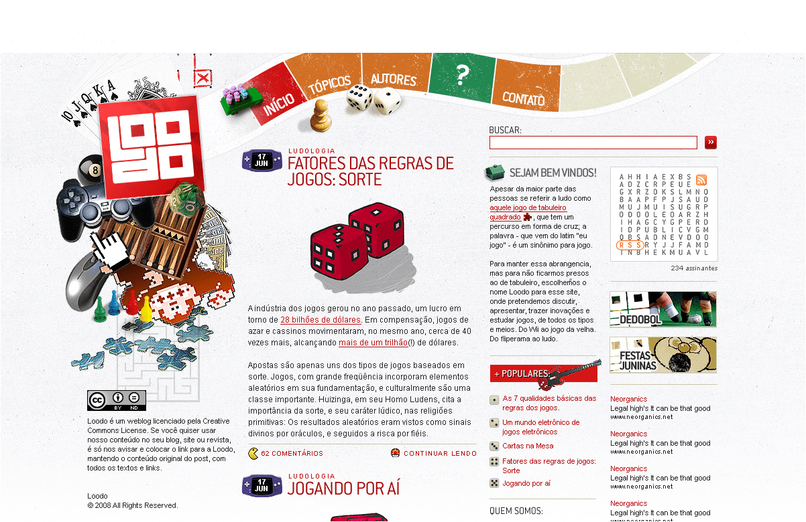
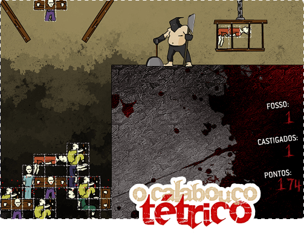
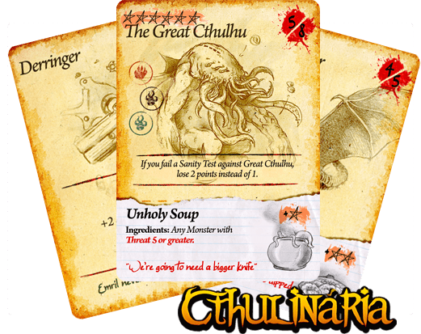
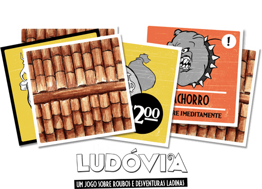

<div class="modal__wrapper">
<div class="modal__scroller">
<div class="modal__header">
<h2 class="modal__title">Loodo</h2>
<h3 class="modal__tags">
<span class="modal__tag">Game Design</span>
<span class="modal__tag">Graphic Design</span>
<span class="modal__tag">Development</span>
</h3>
</div>
<div class="modal__content">
<div class="modal__editable">
<p>Loodo started off as a hobby and personal project that spread its wings and became something much bigger than I'd anticipated.</p>
<p>I had been studying a lot of game design theory and wanted to put some of my learnings into practice, to develop games as an artistic/creative expression. With that in mind I created the Loodo blog and developed a few game projects (all of which were shared in the blog).</p>
<p>The blog was live for three years, with daily updates and won the Peixe Grande web design award for Best Blog Design in 2009.</p>
<figure class="modal__image--full">

</figure>
<figure class="modal__image--full">

</figure>
<h2>Calabouço Tétrico</h2>
<p>
Calabouço Tétrico (Tetric Pit) was a flash game based on Raph Koster's concept on his book "Theory of Fun". This project was mentioned on Ian Bogost's book "<a href="https://books.google.com.br/books?id=5-LIvgZcG-gC&amp;pg=PA24&amp;lpg=PA24&amp;dq=%22Calabou%C3%A7o+T%C3%A9trico%22&amp;source=bl&amp;ots=KJnXiFM_Ok&amp;sig=ACfU3U0IJd7UHOfin2dJWIaUINYMJuiu-A&amp;hl=pt-BR&amp;sa=X&amp;ved=2ahUKEwi_pJ_ek-LhAhV9JrkGHf5QDNQQ6AEwCXoECAcQAQ#v=onepage&q=%22Calabou%C3%A7o%20T%C3%A9trico%22&f=false" target="_blank">Newsgames</a>", on <a href="https://www.raphkoster.com/2009/02/13/atof-tetris-variant-comes-true/" target="_blank">Raph Koster's blog</a>, and some other Game Design publications.
</p>
<p>You can still play this game at <a href="https://www.kongregate.com/games/raphaelaleixo/tetric-pit" target="_blank">Kongregate</a>.</p>
<figure class="modal__image--full">

</figure>
<h2>Cthulinária</h2>
<p>Cthulinária was Loodo's take on Invisible City's free print-to-play game called "Cthulbeque". After contacting the author, we created a new (and still free) game with updated art and rules.</p>
<p>This updated version was selected for the Brazilian Digital Games Symposium's showcase called "Games and Art", and later had a fan-made expansion and a porting to <a href="https://steamcommunity.com/sharedfiles/filedetails/?id=485340291" target="_blank">Steam's Tabletop Simulator</a>.</p>
<p>You can download the game piece and rules on <a href="https://boardgamegeek.com/boardgame/62352/cthulinaria" target="_blank">BoardGameGeek</a>.</p>
<figure class="modal__image--full">

</figure>
<h2>Telhados de Ludóvia</h2>
<p>"The Rooftops of Ludovia, a game about thefts and crafty unfortunate events" was our first boardgame which we made in its entirety: From game design, to development, to graphic design and art direction, as well as rule writing.</p>
<p>As every other game in Loodo, it was also distributed for free as a print-and-play game.</p>
<p>You can download the game piece and rules on <a href="https://boardgamegeek.com/boardgame/43257/rooftops-ludovia" target="_blank">BoardGameGeek</a>.</p>
</div>
</div>
</div>
</div>
